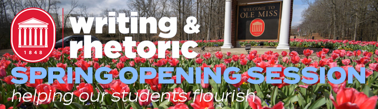

Spring 2021 Opening Sessions¶
The Spring 2021 Opening Session included synchronous and asynchronous components. On-Demand sessions were developed and recorded by DWR faculty and uploaded for Panopto for teachers to access at any time.
Synchronous Sessions¶
Synchronous orientation sessions take place live in a Zoom meeting at the scheduled time.
Date and Time |
Description |
|---|---|
Thurs 1/14, 10:00 |
Business Theme Meeting: A meeting of WRIT 102 Business Theme teachers. |
Thurs 1/14, 1:00 |
Pop Culture Theme Meeting: A meeting of WRIT 102 Pop Culture Theme teachers. |
Thurs 1/14, 2:00 |
Environment Theme Meeting: A meeting of WRIT 102 Environment Theme teachers. |
Fri 1/15, 12:00 |
Food Theme Meeting: A meeting of WRIT 102 Food Theme teachers. |
Sessions On-Demand¶
Previously recorded workshop sessions are available on-demand starting Wednesday January 13. Click “View Workshop Stream” to view the session in Panopto.
Lessons Learned: Helping Students Succeed Wendy Goldberg, Fara Shook, and Susan Wood discuss lessons learned from teaching WRIT 102 in the Fall aimed at helping students succeed this semester. |
|
Helping Students Make Connections Meredith Harper discusses student engagement and models methods for helping students think about audience. |
|
About Project One Wendy Goldberg discusses the first class project that has been added to the WRIT 102 curriculum. |
|
About Project Two Wendy Goldberg discusses the second class project that has been added to the WRIT 102 curriculum. |
|
About Project Three Wendy Goldberg discusses the third class project that has been added to the WRIT 102 curriculum. |
|
Writing Groups in WRIT 102 Shanna Flaschka discusses writing groups in WRIT 102 and how to incorporate them into your Spring 2021 classes. |
|
Eduflow Peer Review Shanna Flaschka provides a brief overview of the Eduflow peer review platform. |